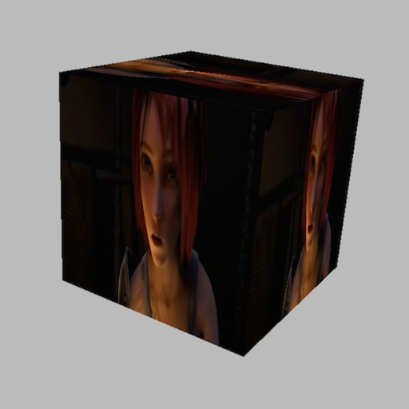
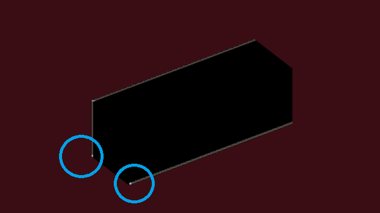
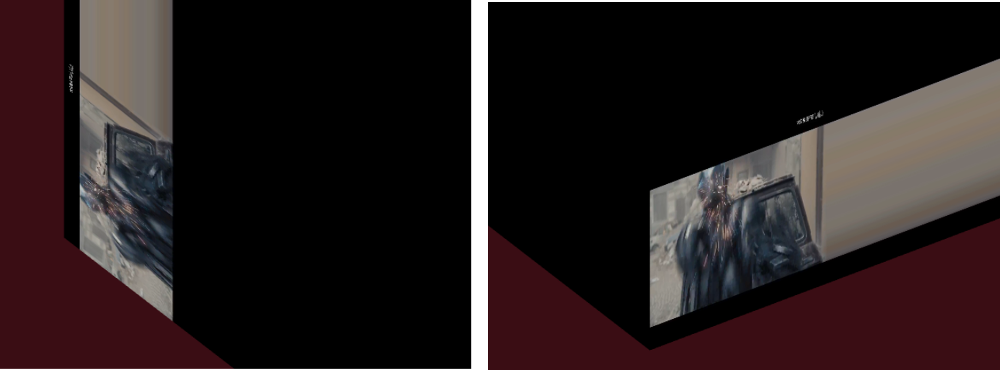
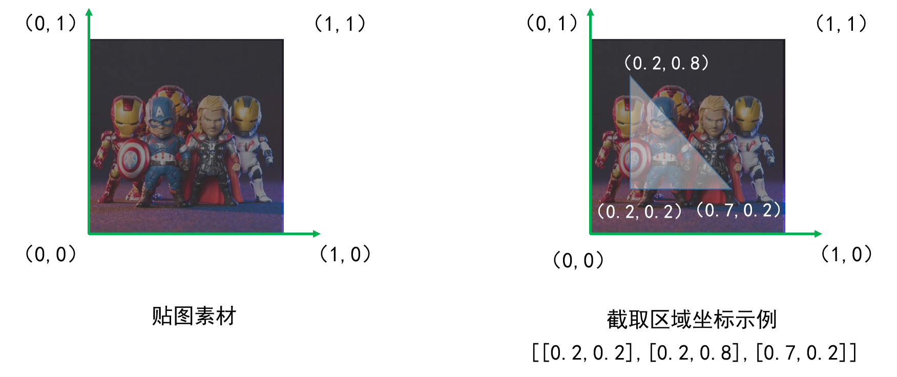
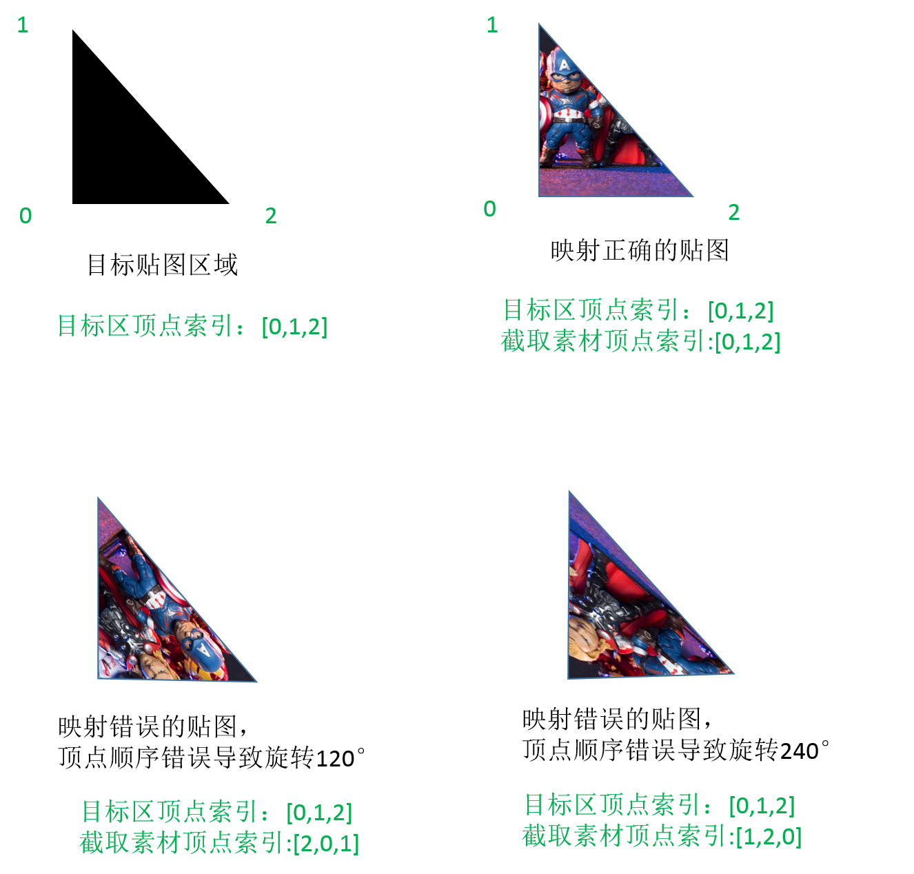

原文连接:https://www.cnblogs.com/dashnowords/p/11216540.html
示例代码托管在：http://www.github.com/dashnowords/blogs
博客园地址：《大史住在大前端》原创博文目录
华为云社区地址：【你要的前端打怪升级指南】

一. 大作业说明
通读完上一篇博文中提及的教程，觉得应该搞个大作业巩固一下所学的知识，想起刚上映的漫威宇宙第三阶段收官之作《蜘蛛侠·英雄远征》，于是决定仿一个MARVEL的片头动画作为three.js的课后练习，使用的版本是R104版本。本节先来解决视频贴图的问题。
二.基本思路
简易片头动画的实现思路如下，除了正常的舞台元素外，需要背景音乐，使用THREE.AudioLoader就可以从后后台加载音乐，舞台中主要的实体元素是MARVEL这几个字母的立体模型，可以使用THREE.TextGeometry来进行建模（【Three.js绘制字体模型】），它要求先载入字体文件，然后才能实例化，参考官方文档的实现就可以了。有了字体模型以后，还需要一些影片素材贴在字体模型上，THREE.VideoTexture可以解决这个问题（【Three.js使用VideoTexture实现视频Video更新纹理】），它可以将HTML中的<video>标签引入的资源作为表面纹理通过材料实例的map参数与之关联在一起，然后贴在几何体表面，最后要解决的问题就是镜头的变化了，看过漫威电影的同学都知道，片头动画最后一部分的画面先是镜头后退，然后MARVEL几个字母逐渐翻转过来，这个效果的实现方式很多，可以调整相机参数，也可以调整物体参数，建议自己动手时各种方法都尝试一下。为了熟悉更多特性，笔者自己在实现中使用正交相机，通过调整正交相机的视场宽度来模拟镜头后退动画（在透视相机下可以直接调整相机的Z轴坐标实现类似的效果），然后通过设置几何体的位移和旋转来模拟镜头的移动。
三.视频纹理表面修复——UV映射
3.1 问题描述

整个大作业中最难处理的就是视频纹理贴图的部分，所以本篇先来搞定这个知识点。如果使用THREE.js提供的Geometry基本不会遇到什么问题，例如上图中的示例，就将视频素材贴在了立方体的各个面上，然而当你使用其他带有一些自定义性质的几何体实例，比如自己画了一个shape然后拉伸成为拉伸体，或者本次大作业中需要使用的TextGeometry字体模型时。视频贴图就直接失效了。同样尺寸的立方体，如果用THREE.BoxGeometry来生成实例，表面就可以直接贴视频，如果使用shape画一个矩形再拉伸成同样尺寸的实体，视频就无法正常覆盖在模型表面，如下图所示：

仔细看你会发现图片边界的地方有发光的条，将细节放大后可以看到下面的场景：

可以看到，视频实际上的确是覆盖在立方体表面了，但只是占了很小的一块，所以需要针对这种情况进行模型纹理修复，使视频可以覆盖几何体的单个表面。
3.2 纹理贴图的基本原理-UV映射
在Three.js中，几何体是通过点和面的特征构建起来的，如果将一个几何体实例对象在控制台打印出来，就可以看到存储端点坐标信息的vertexs和存储面信息的faces数组。当你构建一个立方体时，会发现它的faces属性数组中有12个面的信息，因为Three.js中默认使用三角面片来构建几何体，一个矩形表面需要用两个三角面片来构建，（你可以将立方体材料material中传入 wireframe:true来看到立方体的线框图），faces数组中每一个面中存储的是构建这个三角面的3个点的位置信息。
纹理贴图坐标也称为UV坐标，它的贴图原理是这样的，首先将贴图素材x轴和y轴的长度以0-1来标记，那么使用3个坐标范围在[0~1,0~1]的点就可以在图形素材中以三角形剪裁出需要的部分，同理使用4个坐标范围在[0~1,0~1]的点，就可以在图形素材中以四边形剪裁出需要的部分，以此类推，如下图所示：

右图中白色三角形的三个顶点在归一化坐标系中的坐标值已经列出，将[0.2,0.2],[0.2,0.8],[0.7,0.2]这三个坐标点信息填充到对应的UV映射数组中后，Three.js就会用这个三角形区域来对一个三角面进行贴图。由于默认面是三角面，所以我们通过实例化3个THREE.Vector2(x,y)对象来表示从素材中截取的三角形区域，得到了素材后要如何将它与三角面的顶点坐标对应起来呢？这就引出了本节中的关键概念——UV映射矩阵。
大部分高大上的概念都离不开一个土掉渣的实现，
UV映射矩阵也不例外。
由于贴图素材是三个点，几何体某个三角面也是有三个顶点，如果不限制索引，那么就可能存在很多种贴图结果：

为了保证贴图素材的方向，它们之间就有存在一个对应关系，否则最后渲染的纹理可能就是倒着的或者旋转90°的图像，所以UV映射矩阵中存储的依然是上例中右图的三个点，但默认索引和构成几何体指定面的三个顶点的索引相对应，这就唯一限定了截取表面到几何体三角面的贴图样式。
3.3 关键示例代码
完整的示例可以从附件或开头处的github代码仓中获取，示例是一个express工程，npm install装一下依赖，跑起来之后访问localhost:3333就可以看到。
//重构UV Mapping
function rebuildUVMapping() {
//在纹理素材上标记关键点
let pos = [
new THREE.Vector2(0,0.1),
new THREE.Vector2(1,0.1),
new THREE.Vector2(1,0.9),
new THREE.Vector2(0,0.9),
]
//uv映射的纹理存放在几何体实例的下面这个属性中
let uvs = geometry.faceVertexUvs[0];
//背面
//生成网格时材料可以传数组，materialIndex可以为不同面指定不同的材质，本例中对应不同的视频片段
geometry.faces[0].materialIndex = 4;
geometry.faces[1].materialIndex = 4;
//重构UV映射关系矩阵
uvs[0] = [pos[1], pos[0], pos[3]];
uvs[1] = [pos[3], pos[2], pos[1]];
//正面
geometry.faces[2].materialIndex = 0;
geometry.faces[3].materialIndex = 0;
uvs[2] = [pos[3], pos[0], pos[1]];
uvs[3] = [pos[1], pos[2], pos[3]];
//标记uv映射是可更新的
geometry.uvsNeedUpdate = true;
}四.小结
视频纹理是本例中最难的部分了，下一篇中笔者将构建字体模型，并加入镜头转换，完成整个预期的动画，敬请关注，也希望感兴趣的小伙伴一起交流。